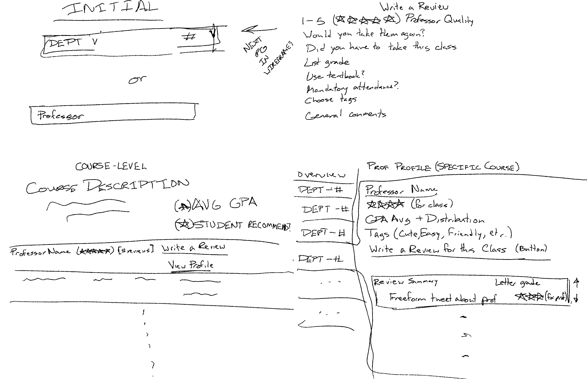
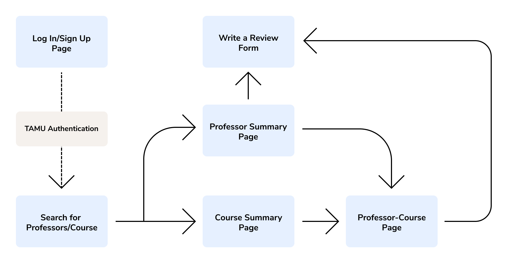
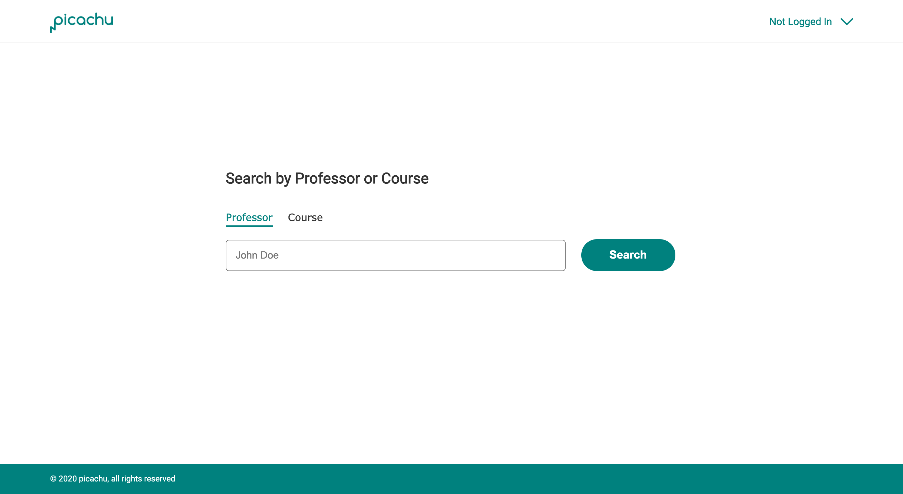
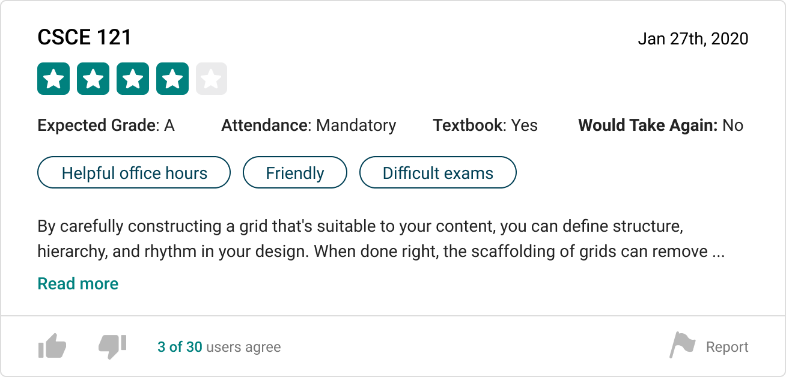
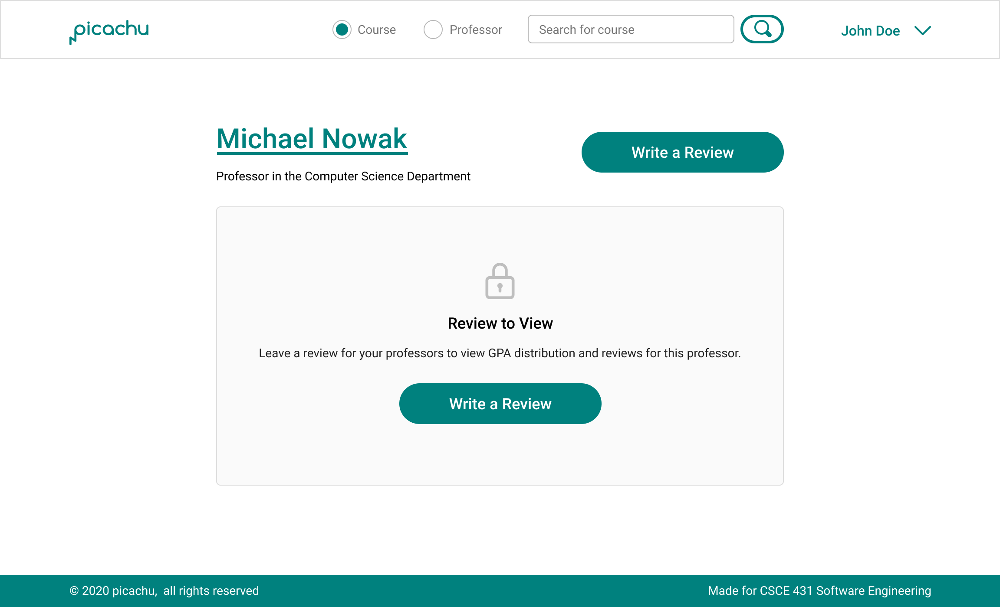

My Role
I worked with my team to develop user stories and low-fidelity prototypes to map out our product. I was in charge of designing high-fidelity prototypes and developing the front-end for the project. I also served as the scrum master and product owner, communicating with our customer.
01 Problem Context
At Texas A&M University, students are asked to fill out PICA (Personalized Instructor/Course Appraisal System) evaluations at end of each semester
to provide feedback to professors on their course and instruction quality. Administration uses this feedback to allocate resources, funding, and determine if the course will continue to be offered.
However, the feedback rate among students is so low professors often offer incentives to motivate students fill out the form.
We want to understand why feedback rate is so low and create a system that encourages students to provide feedback.
Problem Statement
How can we help professors increase the quantity and quality of feedback from students on the courses they instruct?
Final Product
Project Repository
03 Research
Customer Interview
Our primary customer and stakeholder in this project was Assistant Professor, Paul Taele. We asked him about the purpose of
receiving student feedback, issues he saw with current methods of collecting feedback, and what he would like to see in a new system.
A quick summary of his points include:
- Only students with extreme views leave feedback (best vs worst class ever)
- Questions designed for adminstration, not students
- Students cannot access these reviews for reference later
Customer Interview Video
User Interviews
Things we wanted to understand about students:
- What motivates students to leave reviews for professors?
- Knowing the benefits of leaving feedback, why don't students do it?
- Should students have access to professor reviews?
- Why do students look at reviews on external sites such as Rate My Professor?
Competitive Analysis
After our customer interview, we looked into existing review sites and identified pros and cons for each.
| Website |
Pros |
Cons |
| PICA |
- Feedback can be verified they are from students
- Administration acts upon feedback provided
|
- Students cannot reference reviews for future classes
- Questions are poorly designed for students
- Low feedback rate by students
|
| Rate My Professor |
- Can vote on quality reviews vs poor reviews
- Uses "Top Tags" to summarize a professor's rating
- Questions tailored to students
|
- Reviews can be outdated or do not exist for a professor
- Cannot easily compare professors for courses
- Source of feedback cannot be verified
|
| Koofers |
- Shows all courses taught by a professor
- Shows overall rating and GPA reported by students
- Uses visual aids like graphs to illustrate trends
|
- Not as many reviews/not widely adapted by TAMU
- Certain sections are locked from general access
|
04 Concept Development
User Stories
Although our customers are professors, we decided that our primary users are students because they are the ones who need to provide feedback.
Therefore we compiled a series of user stories focused on the student.
Search Functionality
- As a student, I should be able to search for reviews based on course so I can find reviews relevant to me.
- As a student, I should be able to search all the professors for a specific course so I can compare their ratings.
Review Access
- As a student, I should be able to view professor evaluations from other students so I can get a better idea of how the professor teaches.
- As a student, I should be able to use my TAMU Google account so I ensure the reviews are left by students.
- As a student, I should only be able to view others' reviews after submitting a few of my own so I can sustain the review process.
Review Submission
- As a student, I should be able to submit a review for a professor for a specific class so other students can see my opinions.
- As a student, I should be able to see visualized data like graphs and word clouds to get a fast impression of the professor/course.
- As a student, I should be able to write anonymous reviews so that I can freely express my opinions without worrying about possible repercussions.
Review Quality Control
- As a student, I should be able to see total numbers of reviews counted for grade average so I can ensure that single outliers grade are not affecting results.
- As a user, I should be able to report a review as offensive/harmful/irrelevant so I can make sure all reviews are high-quality.
- As a user, I should be able to rate reviews so the users can moderate the reviews based on their quality and sincerity.
Sketches

Series of sketches to illustrate different user stories
Site Mapping

Site map to guide different pages we want to include in our designs and development
05 Product Features
Search Page

One design decision that deviated from the high-fidelity prototypes developed was combining the search bars on the search page.
Initially, there were two search bars, one for professors and one for students for easier code implementation, but eventually overruled
that decision for a better user experience.
Rating Reviews

Initially, we wanted to implement a ranking system to help sort quality reviews, but modified the idea to an upvote/downvote system.
This system is more familiar behavior and quicker for users vote than to choose a number to create a rating.
Sustaining The Review Process

To sustain the review process, we chose to lock users out of certain sections until they left their own review. While this is not,
an all-encompassing solution, it would help motivate students to leave a review.
06 Testing & Validation
Final Customer Feedback
Next Steps
Our next steps would definitely be to test this prototype with students
Takeaways
It would have been nice to have time to conduct user studies with students to understand the problem better. I think we focused too much
on our customer and the implementation, although this project was completed for a software engineering course.